Main Figures
Figure 2a: Reflectance curves for crown feathers
This section demonstrates how to create reflectance curves for crown feathers across the three populations.
Load the Data: The reflectance data (in .txt format) for each individual’s crown feathers are stored in the “Dinopium_crown/” folder. Each feather has three replicate readings.
# Read the data
crown_reflect_Data <- getspec("Data/Dinopium_crown/", ext = "txt", decimal = ".")## 123 files found; importing spectra:Quickly visualize the raw data.
plot(crown_reflect_Data)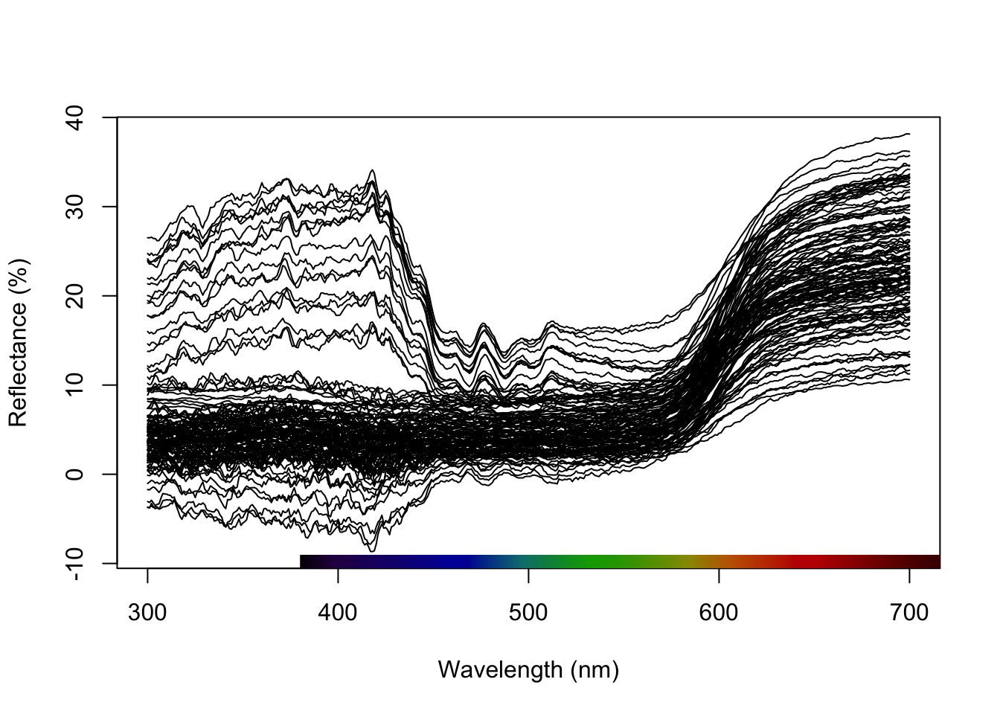
Replace any negative reflectance values with zero and re-plot to confirm the changes.
crown_nonNeg <- procspec(crown_reflect_Data, fixneg = "zero") ## processing options applied:
## Negative value correction: converted negative values to zeroplot(crown_nonNeg)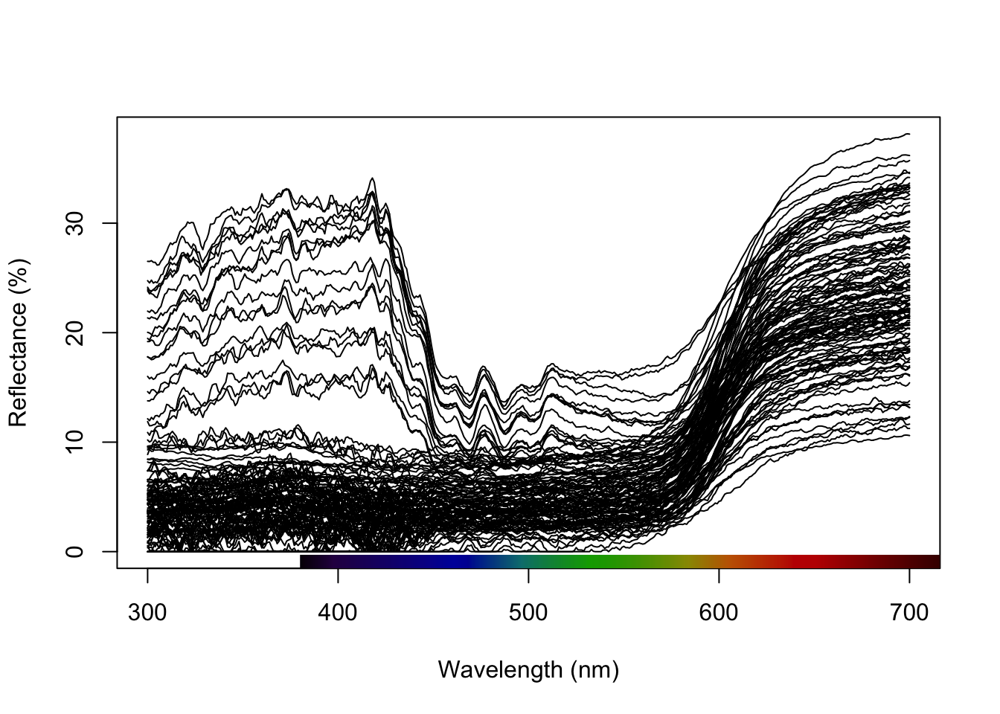
Calculate the average reflectance for each sample across the three replicates.
crown_mean <- aggspec(crown_nonNeg, by = 3, FUN = mean)Create a grouping variable to separate the spectra by population, and then plot the curves with error estimates and annotations for the hue values (mean ± 95% CI) for each phenotype group.
# Create a grouping variable that separates the spectra by the phenotype
crown_pop <- gsub("^[^_]*_([^_]+)_.*$", "\\1", names(crown_mean))[-1]
crown_pheno <- str_replace_all(crown_pop, c("Allo.R"="D.psarodes",
"SymR"="D.psarodes",
"Jaffna"="D.benghalense",
"Mannar"="D.benghalense",
"SymY"="D.benghalense",
"HYB"="Hybrids"))
# Make the plot
aggplot(crown_mean, crown_pheno, FUN.error=function(x)1.96*sd(x)/sqrt(length(x)),
lcol=c("red", "green3","orange"),
shadecol=c("red", "green3","orange"),
xlim=c(375, 700),ylim=c(0, 35),alpha=0.1,lwd=1.5, legend=T, main="Crown Feathers")
# Annotate with lambda R50 mean and 95% CI for each group
abline(v=600, lty=2, col="red")
rect(597, 0, 603, 40, border = "transparent", col = rgb(1, 0, 0, alpha = 0.09))
abline(v=598, lty=2, col="green3")
rect(596, 0, 619, 40, border = "transparent", col = rgb(0, 1, 0, alpha = 0.09))
abline(v=598, lty=2, col="orange")
rect(578, 0, 619, 40, border = "transparent", col = rgb(1, 0.5, 0, alpha = 0.09))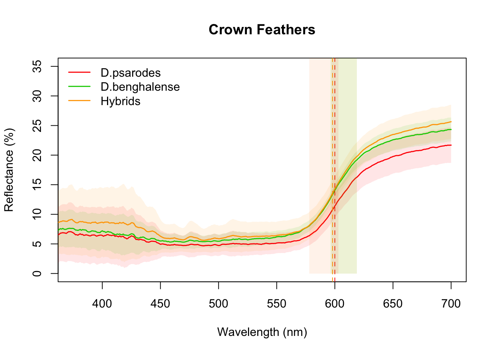
Figure 2e: Reflectance curves for mantle feathers
The method for generating reflectance curves for mantle feathers is the same as that used for crown feathers
Load the data
mantle_reflect_Data <- getspec("Data/Dinopium_mantle/", ext = "txt", decimal = ".")## 123 files found; importing spectra:Replace negative values with zeros.
mantle_reflect_Data_nonNeg <- procspec(mantle_reflect_Data, fixneg = "zero")## processing options applied:
## Negative value correction: converted negative values to zeroCompute the average across the three replicate readings.
mantle_mean <- aggspec(mantle_reflect_Data_nonNeg, by = 3, FUN = mean)Create a phenotype grouping variable and generate the reflectance curves with appropriate annotations.
mantle_pop <- gsub("^[^_]*_([^_]+)_.*$", "\\1", names(mantle_mean))[-1] # to create a grouping variable that separates the spectra by the population
mantle_pheno <- str_replace_all(mantle_pop, c("Allo.R"="D.psarodes",
"SymR"="D.psarodes",
"Jaffna"="D.benghalense",
"Mannar"="D.benghalense",
"SymY"="D.benghalense",
"HYB"="Hybrids"))
# Make the plot
aggplot(mantle_mean, mantle_pheno, FUN.error=function(x)1.96*sd(x)/sqrt(length(x)),
lcol=c("red", "green3","orange"),
shadecol=c("red", "green3","orange"),
xlim=c(375, 700),alpha=0.1,legend=TRUE, main="Mantle reflectance among Dinopium phenotype groups")
# Annotate with lambda R50 mean and 95% CI for each phenotype group
abline(v=602, lty=2, col="red")
rect(599, 0, 604, 40, border = "transparent", col = rgb(1, 0, 0, alpha = 0.09))
abline(v=546, lty=2, col="green3")
rect(541, 0, 551, 40, border = "transparent", col = rgb(0, 1, 0, alpha = 0.09))
abline(v=575, lty=2, col="orange")
rect(567, 0, 583, 40, border = "transparent", col = rgb(1, 0.5, 0, alpha = 0.09))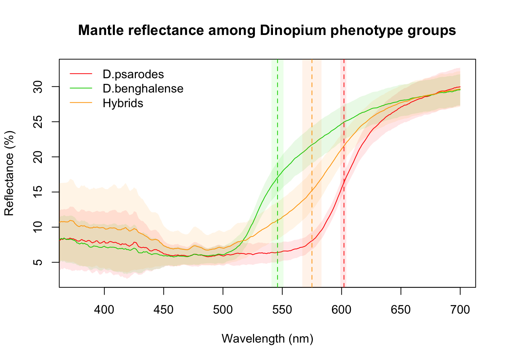
Figure 2b-d and 2f-h: Visualization of Colorimatric Parameters
These figures present three key colorimetric parameters: brightness, carotenoid chroma, and hue, derived from the reflectance data. The parameters are visualized separately for crown feathers (Figures 2b–d) and mantle feathers (Figures 2f–h). These parameters were estimated using the pavo package in R.
Calculate the colorimatric variables and save them as a .csv file
# For crown feathers
crown_colormatrics <- summary(crown_mean)
# To save the data
write.csv(crown_colormatrics, file = "Data/Colorimatric.Data-Dinopium_Crown.csv")
# For mantle feathers
mantle_colormatrics <- summary(mantle_mean)
# To save the data
write.csv(mantle_colormatrics, file = "Data/Colorimatric.Data-Dinopium_Mantle.csv")Please note that Ranasinghe et al., 2025 have plotted the hue values (H3) that were manually calculated from the reflectance data, rather than the H3 values generated by pavo. Load the updated data files with the new hue (H3) values and generate the plots.
# Read the edited mantle data
colorimatrics <- read.csv("Data/Colorimatric.Data-Dinopium mantle and crown from pavo.csv", stringsAsFactors = T)
# Reshape the data
colorimatrics$Species <- factor(colorimatrics$Species, levels = c("D. benghalense", "Hybrid", "D. psarodes"))
##### Figure 2b and 2f: Brightness
ggplot(colorimatrics, aes(y = B2, x = Species, fill=Species)) +
geom_jitter(position = position_jitter(0.3), size = 3.5, shape = 21, color = "black", alpha = 0.6) +
stat_summary(fun.data = "mean_cl_normal", fun.args = list(mult = 2.5),
geom = "pointrange", size = 0.5, shape = 23, fill = "black")+
facet_wrap(~Feather, ncol =2) +
scale_fill_manual(values = c("yellow", "orange", "red"),
name = NULL,
labels = c(expression(paste("Yellow ", italic("(D. benghalense)"))),
"Intermediate phenotype",
expression(paste("Red ", italic("(D. psarodes)"))))) +
scale_y_continuous(breaks = seq(5, 25, by = 5), limits = c(5, 25)) +
ylab("Brightness") +
xlab("Phenotypic groups")+
scale_x_discrete(labels = NULL) +
theme_linedraw() +
theme(
aspect.ratio = 1,
panel.grid.major = element_line(color = "white"),
panel.grid.minor = element_line(color = "white"),
strip.background = element_rect(color = "grey50", fill = "grey50"),
strip.text = element_text(face = "bold", size = 11,
margin = margin(10, 10, 10, 10)),
legend.text = element_text(size = 11),
panel.spacing = unit(1.5, "lines"),
legend.position = "top",
axis.title = element_text(size = 15, face = "bold"),
axis.text = element_text(size = 14))## Warning: Removed 2 rows containing non-finite outside the scale range
## (`stat_summary()`).## Warning: Removed 2 rows containing missing values or values outside the scale range
## (`geom_point()`).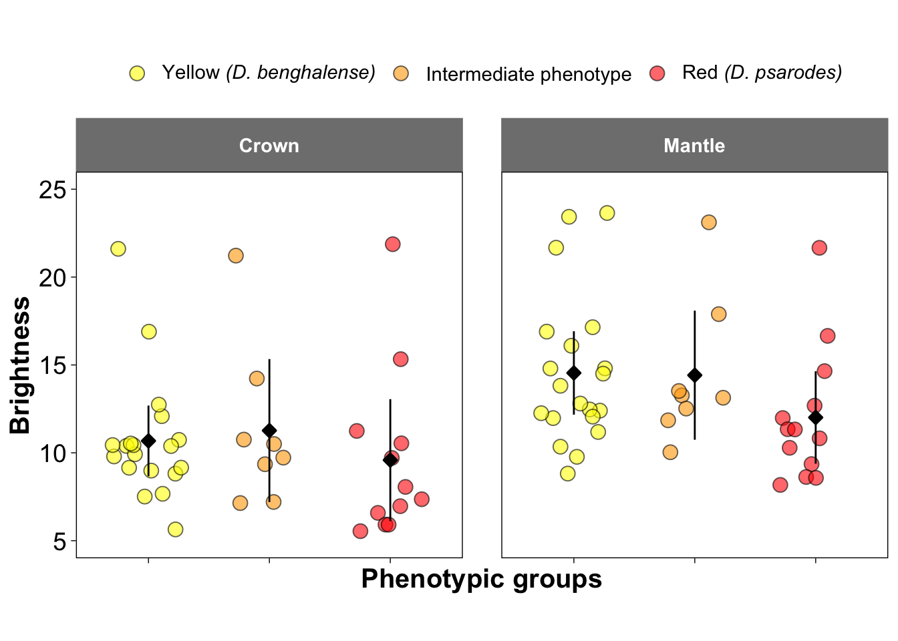
##### Figure 2c and 2g: Caroatenoid Chroma
ggplot(colorimatrics, aes(y = S9, x = Species, fill=Species)) +
geom_jitter(position = position_jitter(0.3), size = 3.5, shape = 21, color = "black", alpha = 0.6) +
stat_summary(fun.data = "mean_cl_normal", fun.args = list(mult = 2.5),
geom = "pointrange", size = 0.5, shape = 23, fill = "black")+
facet_wrap(~Feather, ncol =2) +
scale_fill_manual(values = c("yellow", "orange", "red"),
name = NULL,
labels = c(expression(paste("Yellow ", italic("(D. benghalense)"))),
"Intermediate phenotype",
expression(paste("Red ", italic("(D. psarodes)"))))) +
scale_y_continuous(breaks = seq(0, 1, by = 0.2), limits = c(0, 1)) +
ylab("Carotenoid chroma") +
xlab("Phenotypic groups")+
scale_x_discrete(labels = NULL) +
theme_linedraw() +
theme(
aspect.ratio = 1,
panel.grid.major = element_line(color = "white"),
panel.grid.minor = element_line(color = "white"),
strip.background = element_rect(color = "grey50", fill = "grey50"),
strip.text = element_text(face = "bold", size = 11,
margin = margin(10, 10, 10, 10)),
legend.text = element_text(size = 11),
panel.spacing = unit(1.5, "lines"),
legend.position = "top",
axis.title = element_text(size = 15, face = "bold"),
axis.text = element_text(size = 14))## Warning: Removed 1 row containing missing values or values outside the scale range
## (`geom_point()`).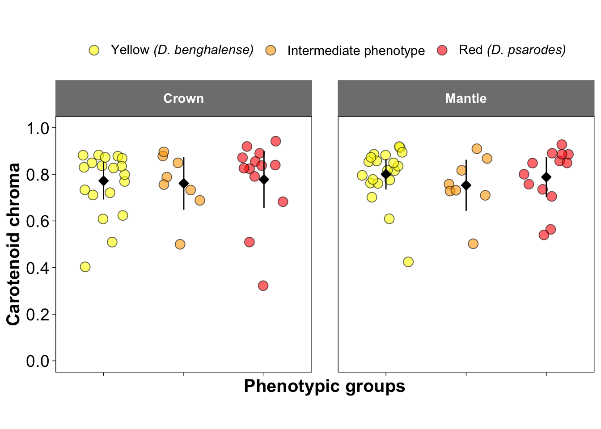
##### Figure 2d and 2h: Hue
ggplot(colorimatrics, aes(y = H3, x = Species, fill=Species)) +
geom_jitter(position = position_jitter(0.3), size = 3.5, shape = 21, color = "black", alpha = 0.6) +
stat_summary(fun.data = "mean_cl_normal", fun.args = list(mult = 2.5),
geom = "pointrange", size = 0.5, shape = 23, fill = "black")+
facet_wrap(~Feather, ncol =2) +
scale_fill_manual(values = c("yellow", "orange", "red"),
name = NULL,
labels = c(expression(paste("Yellow ", italic("(D. benghalense)"))),
"Intermediate phenotype",
expression(paste("Red ", italic("(D. psarodes)"))))) +
scale_y_continuous(breaks = seq(530, 610, by = 20), limits = c(530, 610)) +
ylab("Hue (nm)") +
xlab("Phenotypic groups")+
scale_x_discrete(labels = NULL) +
theme_linedraw() +
theme(
aspect.ratio = 1,
panel.grid.major = element_line(color = "white"),
panel.grid.minor = element_line(color = "white"),
strip.background = element_rect(color = "grey50", fill = "grey50"),
strip.text = element_text(face = "bold", size = 11,
margin = margin(10, 10, 10, 10)),
legend.text = element_text(size = 11),
panel.spacing = unit(1.5, "lines"),
legend.position = "top",
axis.title = element_text(size = 15, face = "bold"),
axis.text = element_text(size = 14))## Warning: Removed 5 rows containing non-finite outside the scale range
## (`stat_summary()`).## Warning: Removed 5 rows containing missing values or values outside the scale range
## (`geom_point()`).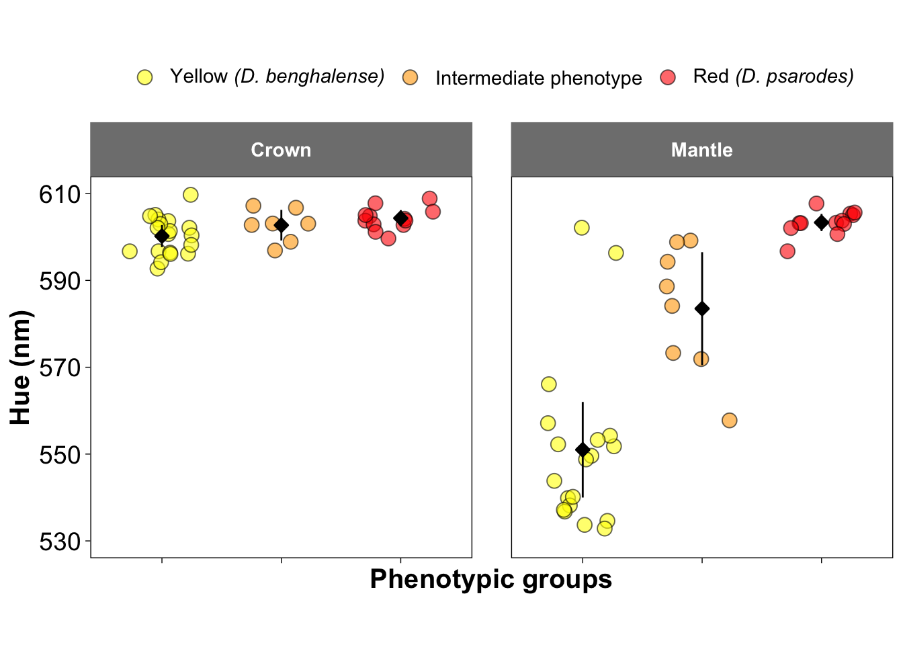
Figure 3a: Carotenoid pigment concentrations
This figure shows the pigment concentrations identified through high-performance liquid chromatography (HPLC) analysis.
# Read the data
HPLC <- read.csv("Data/HPLC_data_Mantle_Crown_feathers_All_Diniopium.csv", stringsAsFactors = T)
# Reshape the data
Pigment_content <- HPLC %>%
pivot_longer(cols = c(lutein.ident__concentration:papilioerythrinone_concentration),
names_to = "Variable",
values_to = "Values")
levels(as.factor(Pigment_content$Variable))## [1] "adonirubin_concentration"
## [2] "alpha..doradexanthin_concentration"
## [3] "astaxanthin_concentration"
## [4] "beta.cryptoxanthin_concentration"
## [5] "canary.xanthophyll.A_concentration"
## [6] "canary.xanthophyll.B_concentration"
## [7] "canthaxanthin_concentration"
## [8] "lutein.ident__concentration"
## [9] "papilioerythrinone_concentration"
## [10] "X3..dehydro.lutein.ident__concentration"
## [11] "zeaxanthin._concentration"Pigment_content$Variable <- factor(Pigment_content$Variable, levels = c("beta.cryptoxanthin_concentration", "zeaxanthin._concentration", "lutein.ident__concentration", "X3..dehydro.lutein.ident__concentration", "canary.xanthophyll.A_concentration", "canary.xanthophyll.B_concentration", "alpha..doradexanthin_concentration", "papilioerythrinone_concentration", "canthaxanthin_concentration","adonirubin_concentration","astaxanthin_concentration"))
# Make the plot
ggplot(Pigment_content, aes(fill = Variable, y = Values, x = Variable)) +
geom_jitter(position = position_jitter(0.3), size = 2.3, shape = 21, color = "black", alpha = 0.6) +
stat_summary(fun.data = "mean_cl_normal", fun.args = list(mult = 1),
geom = "pointrange", size = 0.4, shape = 23, fill = "black")+
facet_wrap(~feathers + Scientific.name,
labeller = labeller(Scientific.name = c("Dinopium benghalense jaffnense" = "D.benghalense",
"Dinopium hybrid " = "Hybrids",
"Dinopium psarodes " = "D. psarodes"), size=0.5)) +
scale_fill_manual(values = c("yellow", "yellow", "yellow", "gold3", "gold3", "gold3", "red3", "red3", "red3", "red3", "red3"),
labels = c("beta.cryptoxanthin_concentration"="beta-cryptoxanthin",
"zeaxanthin._concentration"="Zeaxanthin",
"lutein.ident__concentration"="Lutein",
"X3..dehydro.lutein.ident__concentration"="3'-dehydrolutein",
"canary.xanthophyll.A_concentration"="Canary xanthophyll A",
"canary.xanthophyll.B_concentration"="Canary xanthophyll B",
"canthaxanthin_concentration"="Canthaxanthin",
"adonirubin_concentration"="Adonirubin",
"astaxanthin_concentration"="Astaxanthin",
"alpha..doradexanthin_concentration"="alpha-doradexanthin",
"papilioerythrinone_concentration"="Papilioerythrinone"), name = NULL) +
xlab("Carotenoid pigments") +
ylab("Concentration (mg/g)") +
scale_x_discrete(labels =c("beta.cryptoxanthin_concentration" = "β-Cryptoxanthin",
"zeaxanthin._concentration" = "Zeaxanthin",
"lutein.ident__concentration" = "Lutein",
"X3..dehydro.lutein.ident__concentration" = "3'-Dehydrolutein",
"canary.xanthophyll.A_concentration" = "Canary Xanthophyll A",
"canary.xanthophyll.B_concentration" = "Canary Xanthophyll B",
"canthaxanthin_concentration" = "Canthaxanthin",
"adonirubin_concentration" = "Adonirubin",
"astaxanthin_concentration" = "Astaxanthin",
"alpha..doradexanthin_concentration" = "α-Doradexanthin",
"papilioerythrinone_concentration" = "Papilioerythrinone")) +
theme_linedraw() +
theme(
panel.grid.major = element_line(color = "grey90"),
panel.grid.minor = element_line(color = "grey80"),
strip.background = element_rect(color = "grey50", fill = "grey50", size = 0.1),
strip.text = element_text(face = "bold", color = "white"),
axis.title.y = element_text(face = "bold"),
axis.title.x = element_text(face = "bold", margin = margin(0, 0, 30, 0)),
strip.text.x = element_text(margin = margin(0.05,0,0.05,0, "cm")),
legend.position = "none",
legend.title = element_blank(),
axis.text.x = element_text(angle = 50, hjust = 1)) ## Warning: The `size` argument of `element_rect()` is deprecated as of ggplot2 3.4.0.
## ℹ Please use the `linewidth` argument instead.
## This warning is displayed once every 8 hours.
## Call `lifecycle::last_lifecycle_warnings()` to see where this warning was
## generated.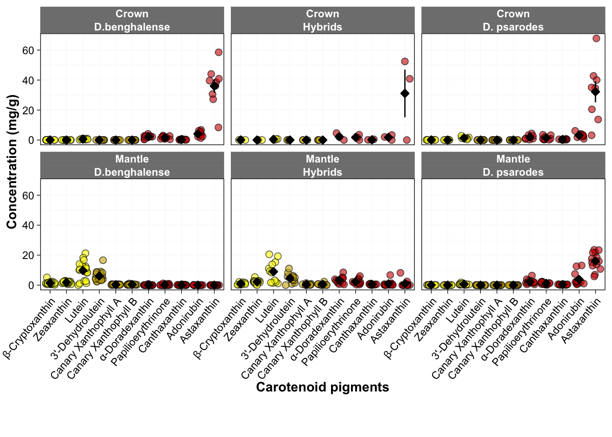
Figure 3b: Carotenoid composition in mantle feathers of intermediates
This figure presents the absolute concentration and composition of red and yellow carotenoids in the mantle feathers of intermediate orange-backed flamebacks, including individuals with multiple feather samples. The scatter plots at the top show the hue for each feather.
# Filter the data to subset only the hybrids
HPLC_HYB_mantle <- filter(HPLC, Scientific.name =="Dinopium hybrid " & feathers == "Mantle")
# Reshape the data
Pigment_content <- HPLC_HYB_mantle %>%
pivot_longer(cols = c(lutein.ident__concentration:papilioerythrinone_concentration),
names_to = "Variable",
values_to = "Values")
Pigment_content$Variable <- factor(Pigment_content$Variable, levels = c("beta.cryptoxanthin_concentration", "zeaxanthin._concentration", "lutein.ident__concentration", "X3..dehydro.lutein.ident__concentration", "canary.xanthophyll.A_concentration", "canary.xanthophyll.B_concentration", "canthaxanthin_concentration","adonirubin_concentration","astaxanthin_concentration", "alpha..doradexanthin_concentration", "papilioerythrinone_concentration"))
Pigment_content$Identification_II <- factor(Pigment_content$Identification_II, levels = c("UD23RR01-1","UD23RR01-2","UE07RR01-1", "UE07RR01-2","UC20RR08","UE07RR03", "UC20RR04-1", "UC20RR04-2", "UC20RR04-3", "UC30RR01-1","UC30RR01-2", "UC29RR04", "UC28RR02"))
# Plot the carotenoid contents
p1 <- ggplot(Pigment_content, aes(x=Identification_II, y=Values, fill=Variable))+
geom_bar(stat = "summary", fun = "mean", color="black", alpha=0.85)+
labs(x="Hybrid Sample ID", y= "Pigment concentration (mg/g)")+
scale_fill_manual(values = c("lutein.ident__concentration"="yellow",
"zeaxanthin._concentration"="yellow3",
"beta.cryptoxanthin_concentration"="yellow4",
"X3..dehydro.lutein.ident__concentration"="gold",
"canary.xanthophyll.A_concentration"="gold3",
"canary.xanthophyll.B_concentration"="lightgoldenrod1",
"canthaxanthin_concentration" = "orangered",
"astaxanthin_concentration" = "red",
"adonirubin_concentration" = "indianred",
"alpha..doradexanthin_concentration" = "darkred",
"papilioerythrinone_concentration"="palevioletred3"),
labels=c("lutein.ident__concentration"="Lutein",
"zeaxanthin._concentration"="Zeaxanthin",
"beta.cryptoxanthin_concentration"="beta-cryptoxanthin",
"X3..dehydro.lutein.ident__concentration"="3'-dehydrolutein",
"canary.xanthophyll.A_concentration"="Canary xanthophyll A",
"canary.xanthophyll.B_concentration"="Canary xanthophyll B",
"canthaxanthin_concentration" = "Canthaxanthin",
"astaxanthin_concentration" = "Astaxanthin",
"adonirubin_concentration" = "Adonirubin",
"alpha..doradexanthin_concentration" = "Alpha-doradexanthin",
"papilioerythrinone_concentration"="Papilioerythrinone")) +
theme_linedraw()+
theme(
plot.title = element_text(size = 12),
axis.text.x = element_text(size=9, angle = 20, hjust = 1),
axis.text.y = element_text(size=13),
axis.title = element_text(size=12),
panel.grid.major = element_line(color = "grey30"),
panel.grid.minor = element_line(color = "white"),
legend.position = "right",
legend.text = element_text(size = 10),
legend.title = element_blank())+guides(fill = guide_legend(nrow = 11))
# Display hue of each sample
HPLC_HYB_mantle$Identification_II <- factor(HPLC_HYB_mantle$Identification_II, levels = c("UD23RR01-1","UD23RR01-2","UE07RR01-1", "UE07RR01-2","UC20RR08","UE07RR03", "UC20RR04-1", "UC20RR04-2", "UC20RR04-3", "UC30RR01-1","UC30RR01-2", "UC29RR04", "UC28RR02"))
p2 <- ggplot(HPLC_HYB_mantle, aes(y = Reflectance.average.Lambda.R50, x = Identification_II)) +
geom_point(shape = 21, fill = "grey80", color = "black", size = 2.3, stroke = 0.5) +
scale_x_discrete(labels =NULL)+
ylim(c(545, 600)) +
labs(y = "Hue (nm)", x = "") +
theme_linedraw() +
theme(axis.title.x = element_blank(),
axis.text.x = element_blank(),
axis.ticks.x = element_blank())
# Make the both plots
p2 / p1 + plot_layout(heights = c(0.25, 1))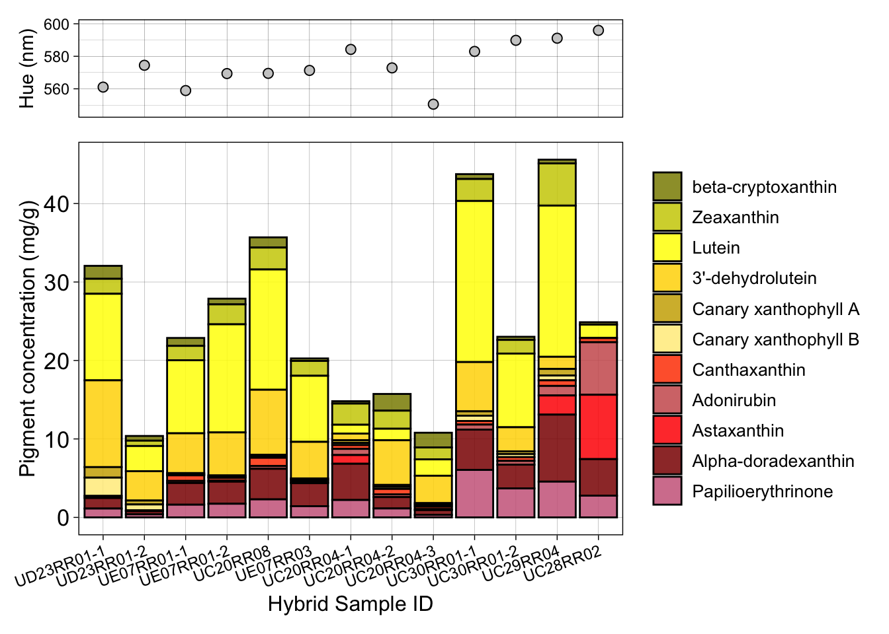
#### Figure 4a and f: Frequency of functional groups for crown
and mantle feathers
# Read the data
HPLC <- read.csv("Data/HPLC_data_Mantle_Crown_feathers_All_Diniopium.csv", stringsAsFactors = T)
# Manipulate the data
HPLC_long <- HPLC %>%
pivot_longer(cols = c(avg.4.keto_groups:avg.3.oxygenation,avg.epsilon.rings),
names_to = "Variable",
values_to = "Values")
levels(as.factor(HPLC_long$Variable))## [1] "avg.3.oxygenation" "avg.4.keto_groups" "avg.epsilon.rings"HPLC_long$Variable <- factor(HPLC_long$Variable, levels = c("avg.3.oxygenation", "avg.epsilon.rings", "avg.4.keto_groups"))
ggplot(HPLC_long, aes(y = Values, x = Scientific.name, fill=Scientific.name)) +
geom_jitter(position = position_jitter(0.3), size = 2, shape = 21, color = "black", alpha = 0.6) +
stat_summary(fun.data = "mean_cl_normal", fun.args = list(mult = 2.5),
geom = "pointrange", size = 0.3, shape = 23, fill = "black")+
facet_wrap(~feathers + Variable, ncol = 3, scales = "fixed",
labeller = labeller(Variable = c("avg.epsilon.rings"="Epsilon rings",
"avg.3.oxygenation"="C3(3')-Oxygenated groups",
"avg.4.keto_groups"="C4(4')-keto groups"))) +
scale_fill_manual(values = c("yellow", "orange", "red"),
name = NULL,
labels = c(expression(paste("Yellow ", italic("(D. benghalense)"))), "Hybrids",
expression(paste("Red ", italic("(D. psarodes)"))))) +
scale_x_discrete(labels =c("Dinopium benghalense jaffnense" = expression(italic("D. benghalense")),
"Dinopium hybrid " = "Intermediates",
"Dinopium psarodes "=expression(italic("D. psarodes")))) +
ylab("Average number of functional groups") +
xlab("Phenotypic groups")+
theme_linedraw() +
theme(
panel.grid.major = element_line(color = "grey90"),
panel.grid.minor = element_line(color = "white"),
strip.background = element_rect(color = "grey50", fill = "grey50"),
strip.text = element_text(face = "bold", color = "white"),
panel.spacing = unit(0.5, "lines"),
legend.position = "top",
axis.title.y = element_text(face = "bold"),
axis.title.x = element_text(face = "bold"),
axis.text.x = element_text(size=9, angle = 20, hjust = 1),
strip.text.x = element_text(margin = margin(0.001,0,0.01,0, "cm"))) 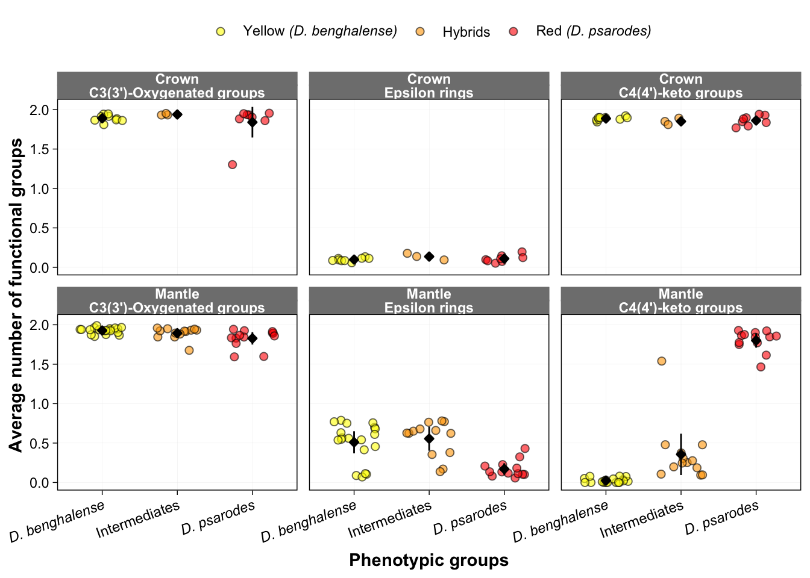
Figure 4g - i: Correlation between frequency of functional groups and hue
The correlation analysis between frequency of functional groups and hue was done only for mantle feathers. Therefore subset only the mantle feather data.
# Read the data
HPLC <- read.csv("Data/HPLC_data_Mantle_Crown_feathers_All_Diniopium.csv", stringsAsFactors = T)
HPLC_mantle <- filter(HPLC, feathers == "Mantle")Perform the correlation analysis between each functional group variable (number of C3(3’)-oxygenated groups, number of ε-end rings, and number of C4(4’)-keto groups) and mantle hue before generating the figure.
Generate figure 4g:
# Spearman's rank correlation between average number of C3(3’)-oxygenated groups mantle hue:
cor.test(HPLC_mantle$Reflectance.average.Lambda.R50, HPLC_mantle$avg.3.oxygenation, method = "spearman")##
## Spearman's rank correlation rho
##
## data: HPLC_mantle$Reflectance.average.Lambda.R50 and HPLC_mantle$avg.3.oxygenation
## S = 23140, p-value = 0.0002679
## alternative hypothesis: true rho is not equal to 0
## sample estimates:
## rho
## -0.5243742# Make the Figure
ggplot(HPLC_mantle, aes(x = Reflectance.average.Lambda.R50, y = avg.3.oxygenation)) +
geom_point(aes(fill = Scientific.name), size = 2, shape = 21, color = "black", alpha = 0.6) +
geom_smooth(method = "lm", se = F, color = "black", size=0.5, linetype = "dashed") +
scale_fill_manual(values = c("yellow", "orange", "red"), name = NULL,
labels = c(expression(italic("D. benghalense")), "Intermediates", expression(italic("D. psarodes")))) +
xlab("Mantle hue (nm)") +
ylab("C3(3')-oxygenated groups") +
ylim(c(0, 2.5))+
theme_linedraw() +
theme(
panel.grid.major = element_line(color = "grey90"),
panel.grid.minor = element_line(color = "white"),
legend.position = "top",
plot.title = element_text(size = 8, face = "bold")) +
annotate("text", x = Inf, y = Inf, label = expression(bolditalic("rho = -0.524;p-value = 0.0002679 ***")), vjust = 1.5, hjust = 2.6, size = 4, face = "balt")## Warning: Using `size` aesthetic for lines was deprecated in ggplot2 3.4.0.
## ℹ Please use `linewidth` instead.
## This warning is displayed once every 8 hours.
## Call `lifecycle::last_lifecycle_warnings()` to see where this warning was
## generated.## Warning in annotate("text", x = Inf, y = Inf, label =
## expression(bolditalic("rho = -0.524;p-value = 0.0002679 ***")), : Ignoring
## unknown parameters: `face`## `geom_smooth()` using formula = 'y ~ x'## Warning in is.na(x): is.na() applied to non-(list or vector) of type
## 'expression'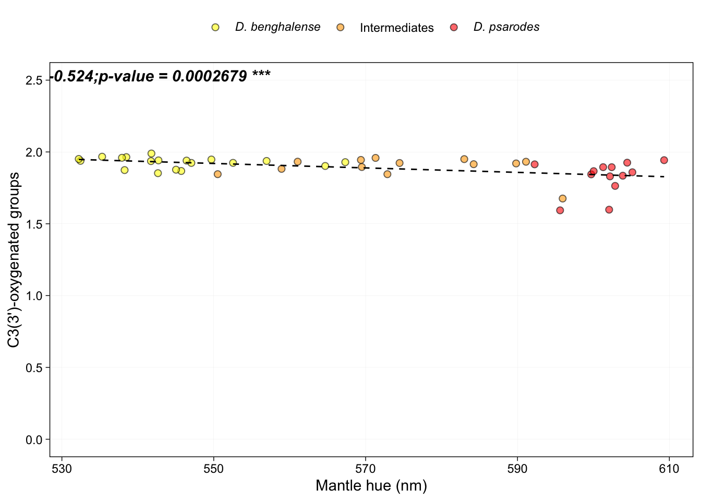
Generate figure 4h:
#Spearman's rank correlation between average number of ε-end rings mantle hue:
cor.test(HPLC_mantle$Reflectance.average.Lambda.R50, HPLC_mantle$avg.epsilon.rings, method = "spearman")##
## Spearman's rank correlation rho
##
## data: HPLC_mantle$Reflectance.average.Lambda.R50 and HPLC_mantle$avg.epsilon.rings
## S = 19992, p-value = 0.03433
## alternative hypothesis: true rho is not equal to 0
## sample estimates:
## rho
## -0.316996# Make the figure
ggplot(HPLC_mantle, aes(x = Reflectance.average.Lambda.R50, y = avg.epsilon.rings)) +
geom_point(aes(fill = Scientific.name), size = 2, shape = 21, color = "black", alpha = 0.6) +
geom_smooth(method = "lm", se = F, color = "black", size=0.5, linetype = "dashed") +
scale_fill_manual(values = c("yellow", "orange", "red"), name = NULL,
labels = c(expression(italic("D. benghalense")), "Intermediates", expression(italic("D. psarodes")))) +
xlab("Mantle hue (nm)") +
ylab("Epsilon rings") +
ylim(c(0, 2.5))+
theme_linedraw() +
theme(
panel.grid.major = element_line(color = "grey90"),
panel.grid.minor = element_line(color = "white"),
legend.position = "top",
plot.title = element_text(size = 8, face = "bold")) +
annotate("text", x = Inf, y = Inf, label = expression(bolditalic("rho = -0.317;p-value = 0.03433 **")), vjust = 1.2, hjust = 2.6, size = 4)## `geom_smooth()` using formula = 'y ~ x'## Warning in is.na(x): is.na() applied to non-(list or vector) of type
## 'expression'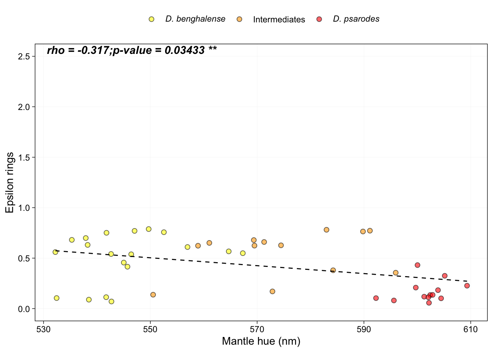
Generate figure 4i:
# Spearman's rank correlation between average number C4(4’)-keto groups mantle hue:
cor.test(HPLC_mantle$Reflectance.average.Lambda.R50, HPLC_mantle$avg.4.keto_groups, method = "spearman")## Warning in cor.test.default(HPLC_mantle$Reflectance.average.Lambda.R50, :
## Cannot compute exact p-value with ties##
## Spearman's rank correlation rho
##
## data: HPLC_mantle$Reflectance.average.Lambda.R50 and HPLC_mantle$avg.4.keto_groups
## S = 1012.7, p-value < 2.2e-16
## alternative hypothesis: true rho is not equal to 0
## sample estimates:
## rho
## 0.9332841# Make the figure
ggplot(HPLC_mantle, aes(x = Reflectance.average.Lambda.R50, y = avg.4.keto_groups)) +
geom_point(aes(fill = Scientific.name), size = 2, shape = 21, color = "black", alpha = 0.6) +
geom_smooth(method = "loess", se = F, color = "black", size=0.5, linetype = "dashed") +
scale_fill_manual(values = c("yellow", "orange", "red"), name = NULL,
labels = c(expression(italic("D. benghalense")), "Intermediates", expression(italic("D. psarodes")))) +
xlab("Mantle hue (nm)") +
ylab("C4(4')-keto groups") +
theme_linedraw() +
theme(
panel.grid.major = element_line(color = "grey90"),
panel.grid.minor = element_line(color = "white"),
legend.position = "top",
# axis.title.y = element_text(face = "bold"),
# axis.title.x = element_text(face = "bold"),
plot.title = element_text(size = 8, face = "bold")) +
annotate("text", x = Inf, y = Inf, label = expression(bolditalic("rho = 0.933;p-value < 2.2e-16 ****")), vjust = 1.5, hjust = 2.6, size = 4)## `geom_smooth()` using formula = 'y ~ x'## Warning in is.na(x): is.na() applied to non-(list or vector) of type
## 'expression'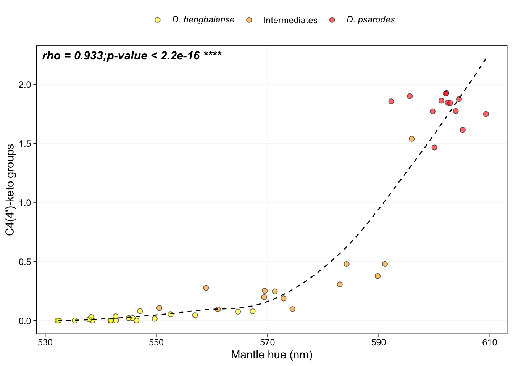
Figure 5a: GWAS Manhattan plot
I conducted a Genome-Wide Association Study (GWAS) analysis using GEMMA. This section demonstrates how to visualize the GEMMA output as a Manhattan plot. For details on performing GWAS with GEMMA, please refer to GEMMA_GAWS_pipeline.txt.
Load output file generated with GEMMA
gwas <- read.table("Data/DW.pre.filtered_n.106.mac3.biallelic.minDP3.minGQ25.NOindel.maxmiss0.4.BIMBAMimputedPC1untrnfm.lmm1.chronNumEdited.assoc.txt", header = T)Restructure the data to facilitate plotting.
SNP <- as.character(gwas$rs)
gwas.new <- separate(gwas, col=rs, into = c('CHR', 'BP'), sep = ':')
CHR <- as.integer(gwas.new$CHR)
BP <- as.integer(gwas.new$BP)
P <- as.numeric(gwas.new$p_wald)
# combine above vectors into a dataframe
gwas.clean <- data.frame(SNP, CHR, BP, P)
head(gwas.clean)## SNP CHR BP P
## 1 47:47 47 47 5.356963e-01
## 2 33:69 33 69 4.707504e-06
## 3 47:107 47 107 6.132530e-01
## 4 47:126 47 126 4.245683e-01
## 5 47:139 47 139 2.303401e-01
## 6 17:149 17 149 8.934821e-01# Make teh QQ plots
qq(gwas.clean$P)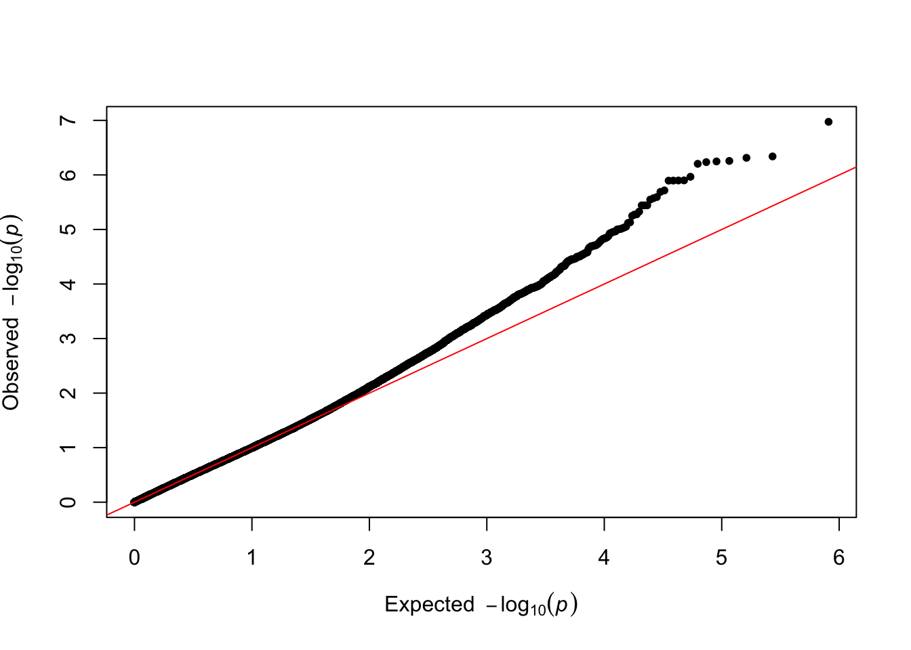
plot(-log(gwas.clean$P)~gwas.clean$CHR) 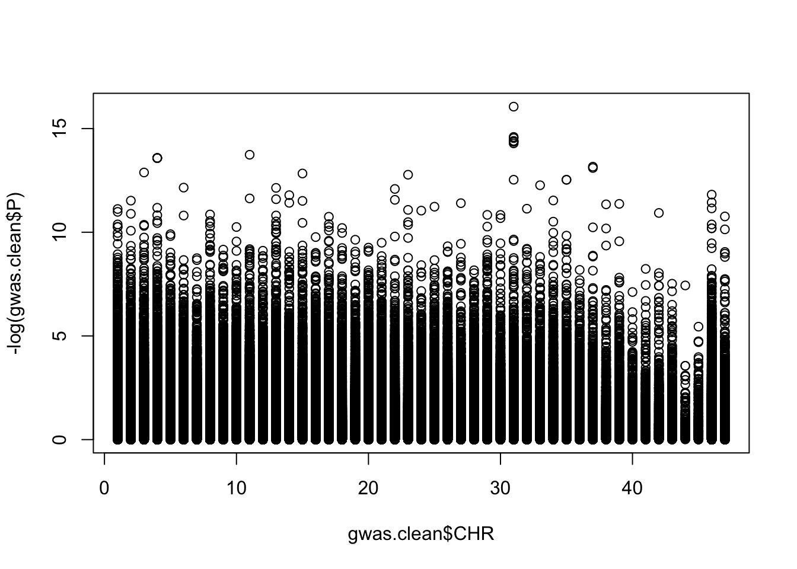
hist(-log(gwas.clean$P))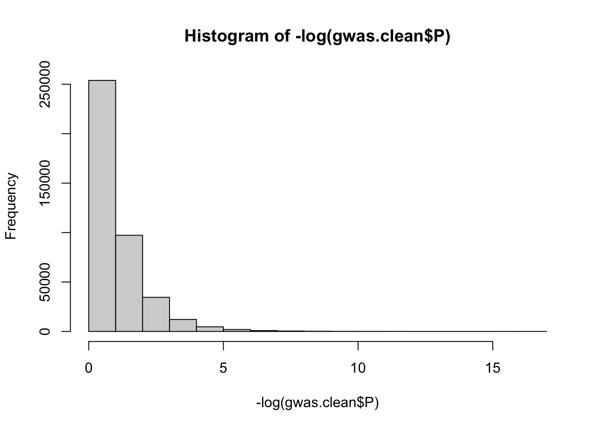
Determine the FDR (False Discovery Rate) p-value threshold
# calculate FDR adjusted p-values
pval.corrected.fdr <- p.adjust(P, method="fdr")
# make the data frame with adjusted p-valeus
gwas.clean <- data.frame(SNP, CHR, BP, pval.corrected.fdr)
colnames(gwas.clean) <- c("SNP", "CHR", "BP", "P")
# get the SNPs that are significant according to FDR shreshold
significant_SNPs <- subset(gwas.clean, pval.corrected.fdr < 0.05)
# make the vector of SNPs to be colored on the plot
SNPs.to.highlight <- significant_SNPs$SNPGenerate the Manhattan plot
manhattan(gwas.clean, main = "Manhattan Plot with FDR p-value threshold", cex = 0.6, cex.axis = 0.9, col = c("black", "grey30"), ylim=c(0,1.5), highlight = SNPs.to.highlight, suggestiveline = F, genomewideline = -log10(0.05), chrlabs = c(1:44, "W", "Z", "UN")) 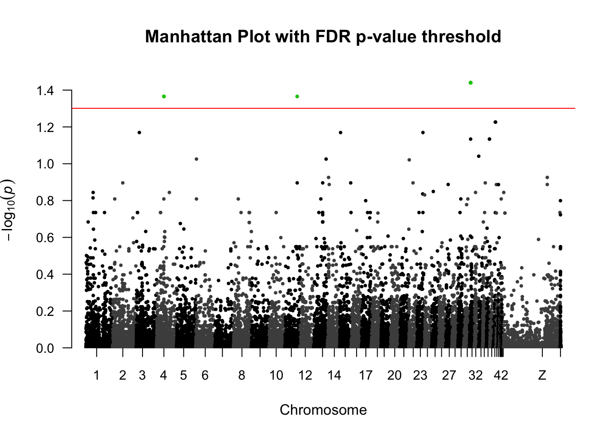
Figure 5b: Genotypes of SNPs significantly associated with mantle coloration
The genotype for each SNP was extracted from the .vcf file and saved as a .csv file.
Load the data
geno.data <- read.csv("Data/Genotype_data-GWAS-SNP.csv", stringsAsFactors = T)Reshaping the data
geno_long <- geno.data %>%
pivot_longer(cols = c(Chr4_17938638,Chr11_30318410,Chr31_3082739,Chr31_3082775,Chr31_3082777),
names_to = "Variable",
values_to = "Values") %>%
filter(Values != "-1") # to remove missing data
geno_long$Values <- as.character(geno_long$Values)
geno_long$Variable <- factor(geno_long$Variable, levels = c("Chr4_17938638", "Chr11_30318410", "Chr31_3082739", "Chr31_3082775","Chr31_3082777")) Generate the plots
ggplot(geno_long, aes(fill = Group_phenotype, y = LAB_pca_PC1, x = Values)) +
geom_jitter(position = position_jitter(0.3), size = 2, shape= 21, color = "black", alpha = 0.6) +
scale_fill_manual(values = c( "orange", "red", "red", "yellow", "yellow", "yellow")) +
facet_wrap(~Variable, scales = "fixed", labeller = as_labeller(c("Chr4_17938638"="Chromosome 4: 17938638",
"Chr11_30318410"="Chromosome 11: 30318410",
"Chr31_3082739"="Chromosome 31: 3082739",
"Chr31_3082775"="Chromosome 31: 3082775",
"Chr31_3082777"="Chromosome 31: 3082777"))) +
xlab("Genotype") +
ylab("Phenotype score (PC1 of LAB PCA)") +
theme_linedraw() +
theme(
panel.grid.major = element_line(color = "grey70"),
panel.grid.minor = element_line(color = "white"),
strip.background = element_rect(color = "grey50", fill = "grey50"),
strip.text = element_text(face = "bold"),
legend.position = "none",
axis.title.y = element_text(size = 9)) ## Warning: Removed 15 rows containing missing values or values outside the scale range
## (`geom_point()`).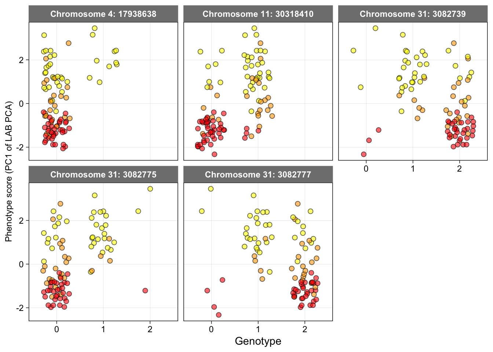